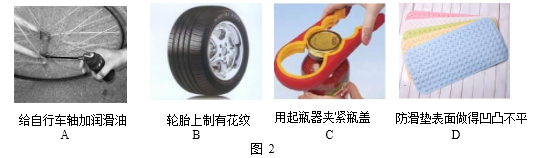
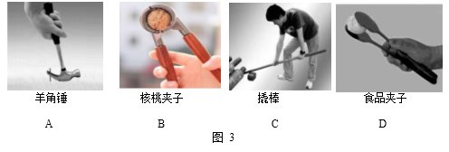

2017年北京市中考物理试题 · 选择题 第6、7、8、9、10题
6．用大小不同的力先后敲击同一个音叉，比较音叉两次发出的声音，下列说法中正确的是
A．响度不同 B．音调不同 C．音色不同 D．频率不同
7．水平桌面上竖直放置着平面镜和直立的铅笔，平面镜中呈现铅笔的虚像。当铅笔与平面 镜之间的距离为 8cm 时，像的高度为 h1，像到平面镜的距离为 s1；当铅笔与平面镜之 间的距离为 4cm 时，像的高度为 h2，像到平面镜的距离为 s2。则下列四个选项中，判 断正确的是
A．s1=s2 B．s1<s2 C．h1>h2D．h1=h2
8．图 2 所示的实例中，目的是为了减小摩擦的是

9．图 3 所示的工具中，在使用时属于费力杠杆的是

10．下列选项中符合安全用电要求的是
A．用湿手按已接电源的插座上的开关
B．及时更换家庭电路中绝缘皮老化、破损的导线
C．在未断开电源开关的情况下，用湿布擦拭电视机
D．把用电器的三脚插头改为两脚插头接在两孔插座上使用